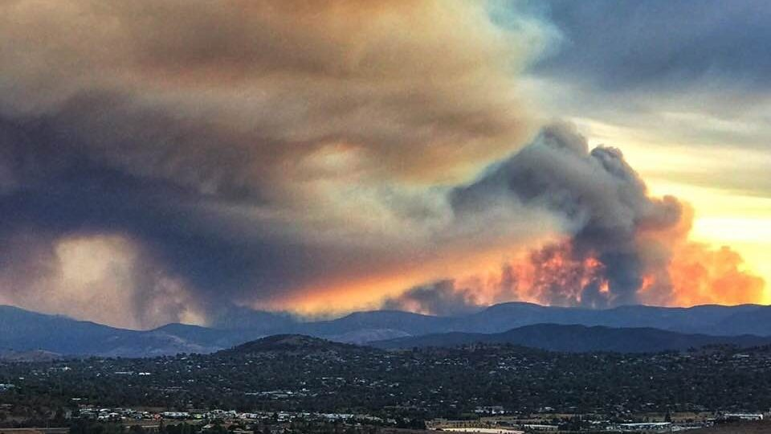
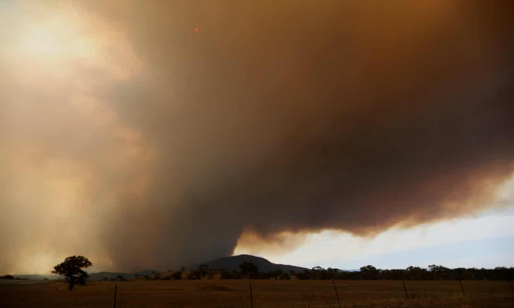
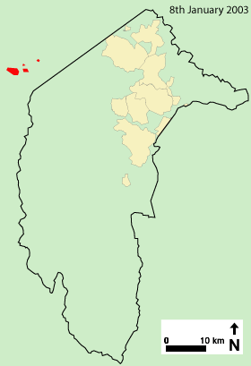

Lead up to the Firestrom
On 8 January 2003, lightning strikes started four fires in the ACT’s Namadgi National Park (Bendora, Stockyard Spur and Mount Gingera) and one in the adjoining Brindabella National Park in New South Wales (McIntyres Hut), over the border but in close proximity to Canberra.
Despite their proximity and very small initial sizes, low intensity, and low rate of spread, these fires were not extinguished or contained by New South Wales emergency services personnel. Subsequent inquiries into the bushfires, including the Roche report, the McLeod inquiry, and the Coroners Report, identified poor management of the initial response as a key contributor to the disaster that unfolded on 18 January 2003.
On 17 January 2003 the ACT Government’s Emergency Services Bureau (ESB) declared a five-day total fire ban. Weather conditions deteriorated, with strong winds, high temperatures and low humidity.
By evening, the McIntyres Hut, Bendora and Stockyard Spur fires had broken containment lines and were spotting several kilometres ahead.
As conditions worsened, firefighters were withdrawn from the fires and redirected to the task of protecting rural properties. Spot fires were threatening the Tidbinbilla Nature Reserve and were burning only two kilometres from the Uriarra pine plantation, just 12 kilometres from the outer suburbs of Canberra.

Conditions are set to worsen over the weekend with temperatures expected to hit the low 40s.
Photo: Twitter

Smoke rises from the Orroral fire in Namadji national park Photograph
Mike Bowers
The Guardian

2003 Canberra Bushfires Animated map showing the progress of the fires starting from the 9th through to after the 18th Released under the GFDL
Drawn by Martyman in Illustrator using various sources including the McLeod Inquiry
Various sources including the McLeod Inquiry
❮
❯

{kind=link}
{kind=link}
{kind=link}